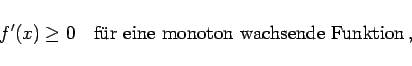
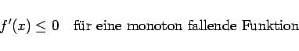
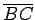

Inhalt Index DeskTop Bronstein

 Differentialrechnung Differentiation von Funktionen einer Veränderlichen Hauptsätze der Differentialrechnung
Differentialrechnung Differentiation von Funktionen einer Veränderlichen Hauptsätze der Differentialrechnung


Wenn eine Funktion f(x) in einem zusammenhängenden Intervall definiert und stetig ist und wenn sie in allen inneren Punkten dieses Intervalls eine Ableitung besitzt, dann ist für die Monotonie der Funktion die Bedingung
|  | (6.26a) |
|  | (6.26b) |
notwendig und hinreichend. Wird gefordert, daß die Funktion im strengen Sinne monoton wachsend oder fallend sein soll, dann darf zusätzlich die Ableitung f'(x) in keinem Teilintervall des oben angegebenen Intervalls identisch verschwinden. In der rechten Abbildung ist diese Bedingung auf der Strecke  nicht erfüllt.
Die geometrische Deutung der Monotoniebedingung ergibt sich daraus, daß die Kurve einer monoton wachsenden Funktion mit wachsendem Argumentwert an keiner Stelle fällt, d.h., daß sie entweder steigt oder horizontal verläuft (linke Abbildung). Daher bildet die Tangente in den einzelnen Kurvenpunkten mit der positiven x-Achse entweder einen spitzen Winkel, oder sie verläuft parallel zu ihr. Für die monoton fallenden Funktion (rechte Abbildung) gilt eine analoge Aussage. Ist die Funktion im strengen Sinne monoton, dann kann die Tangente nur in einzelnen Punkten parallel zur x-Achse verlaufen, z.B. im Punkt A in (linke Abbildung), jedoch nicht in einem ganzen Teilintervall, wie in der rechten Abbildung.